// ORBITAL TRAJECTORY // IMPACT VELOCITY: 20 KM/S // 66.00 MA
EXTINCTION ARCHIVE // DOSSIER #04
T-10S
CHICXULUB IMPACTOR · 10 KM MOUNTAIN OF ROCK
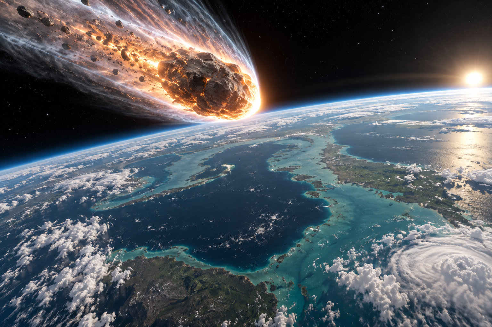

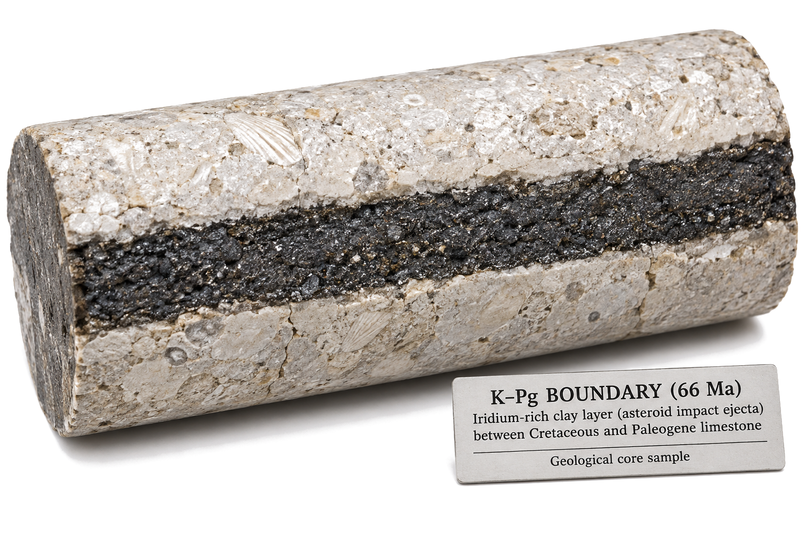
ATMOSPHERIC ENTRY: 45,000 MPH · PUNCHING HOLE THROUGH SKY
10 SECONDS REMAINING
Mountain of Rock!
Sixty-six million years ago, a mountain of rock tore through the sky.
ORBITAL ASTEROID TRAJECTORY DOSSIER
OBJECT CLASSIFICATION: CARBONACEOUS CHONDRITE / CHICXULUB IMPACTER ESTIMATED DIAMETER: 10.5 KILOMETERS (6.5 MILES) ENTRY VELOCITY: 20 KILOMETERS / SECOND (45,000 MPH) COUNTDOWN STATUS: TEN SECONDS TO PLANETARY IMPACTIMPACT IMMINENT
GROUND ZERO // MINUTE ZERO
// KINETIC DETONATION: 100,000,000 MEGATONS TNT
CRATER EXCAVATION // -66.038 MA
// CRATER EXCAVATION // YUCATÁN SHALLOW PLATFORM // 66.038 MA
DOSSIER #04 // GROUND ZERO BLAST
100M MT
GROUND ZERO · 100 MILLION MEGATON FLASH
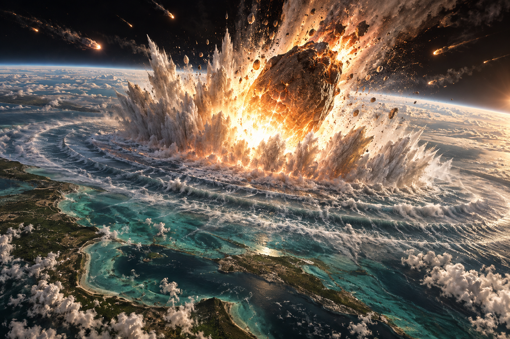
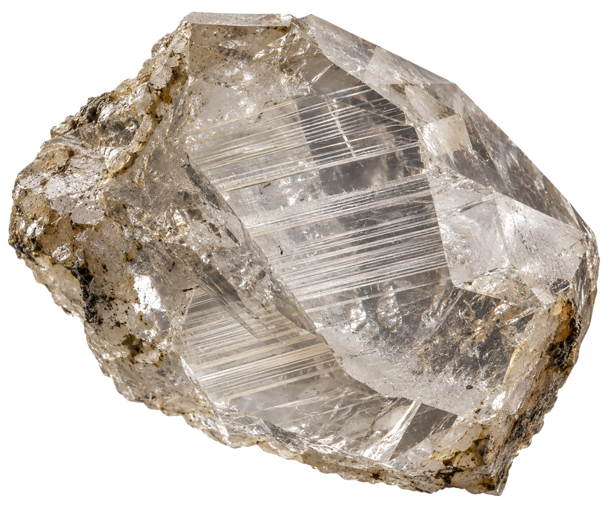
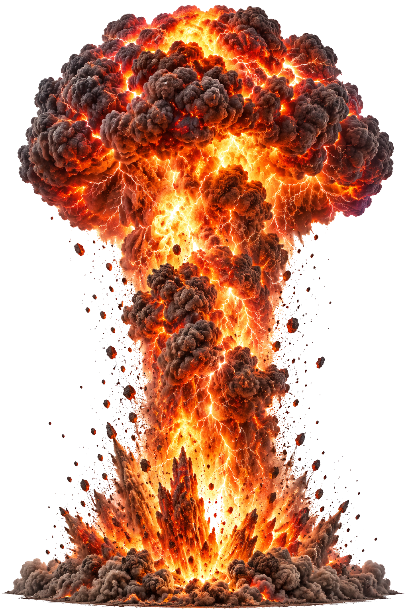
KINETIC YIELD: 100 MILLION ATOMIC BOMBS · 20-MILE CRATER
GROUND ZERO CRATER
Crust Vaporized!
It struck Yucatán with the force of 100 million nuclear bombs.
CHICXULUB IMPACT DETONATION LOG
TOTAL ENERGY DISCHARGE: 4.2 × 10²³ JOULES (100,000,000 MEGATONS) CRUSTAL DISPLACEMENT: 180-KILOMETER CRATER EXCAVATED IN SECONDS PEAK RING GEOMETRY: 30 KILOMETERS OF BEDROCK INSTANTLY MELTED SHOCK PRESSURE: > 60 GIGAPASCALS (PLANAR DEFORMATION IN QUARTZ)VAPORIZED
MINUTE FIVE // THERMAL PULSE
// INFRARED RADIATION: INCANDESCENT BROILER OVEN
GLOBAL FIRE PULSE // RE-ENTERING EJECTA
// ATMOSPHERIC BROILER // INFRARED THERMAL PULSE // 1,500°C GLOW
DOSSIER #04 // THE THERMAL INFERNO
BROILER
THERMAL PULSE · PLANETARY BROILER OVEN
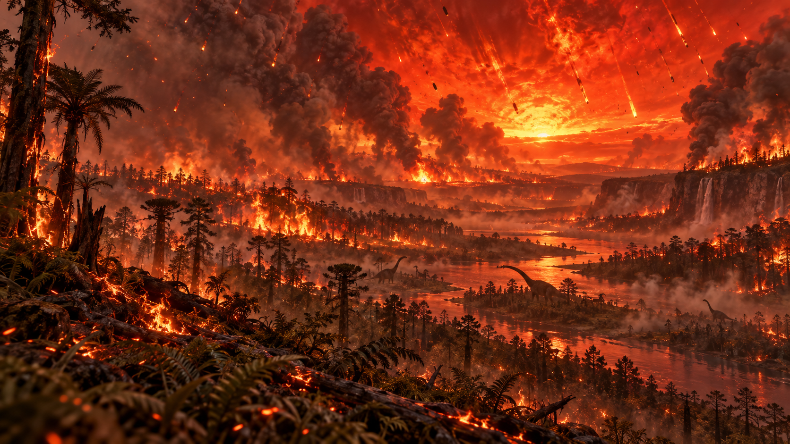
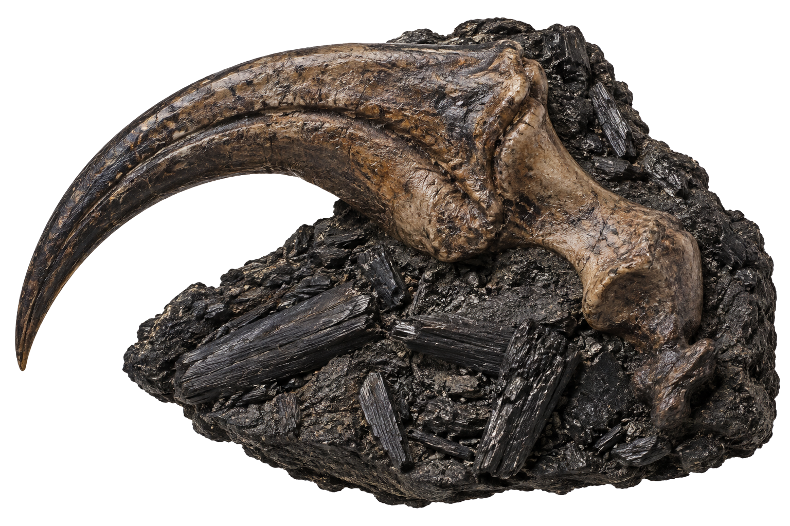
UPPER ATMOSPHERE: 1,500°C · CONTINENTAL FORESTS IGNITE
ATMOSPHERE INCANDESCENT
Giant Broiler Oven!
Within five minutes, a wall of infrared heat pulsed around the globe.
GLOBAL THERMAL RADIATION LOG
INFRARED HEAT FLUX: 10 KILOWATTS / SQUARE METER ATMOSPHERIC TEMPERATURE: UPPER STRATOSPHERE EXCEEDED 1,500°C SPONTANEOUS COMBUSTION: 70% OF GLOBAL FORESTS IGNITED SURVIVAL PROBABILITY: BURROWING ANIMALS & AQUATIC ORGANISMS ONLYINCINERATED
HOUR ONE // GLASS DELUGE
// EJECTA FALLOUT: TEKTITES & MEGATSUNAMIS
CARIBBEAN MEGATSUNAMI // 300-METER SURGE
// IMPACT EJECTA HORIZON // 300M MEGATSUNAMI // RAINING TEKTITES
DOSSIER #04 // THE DUAL CATACLYSM
TEKTITES
EJECTA RE-ENTRY · BOILING GLASS & TSUNAMIS
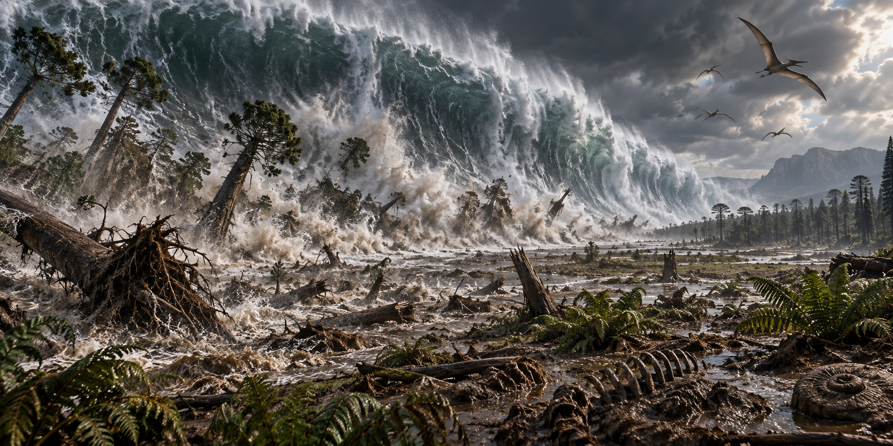
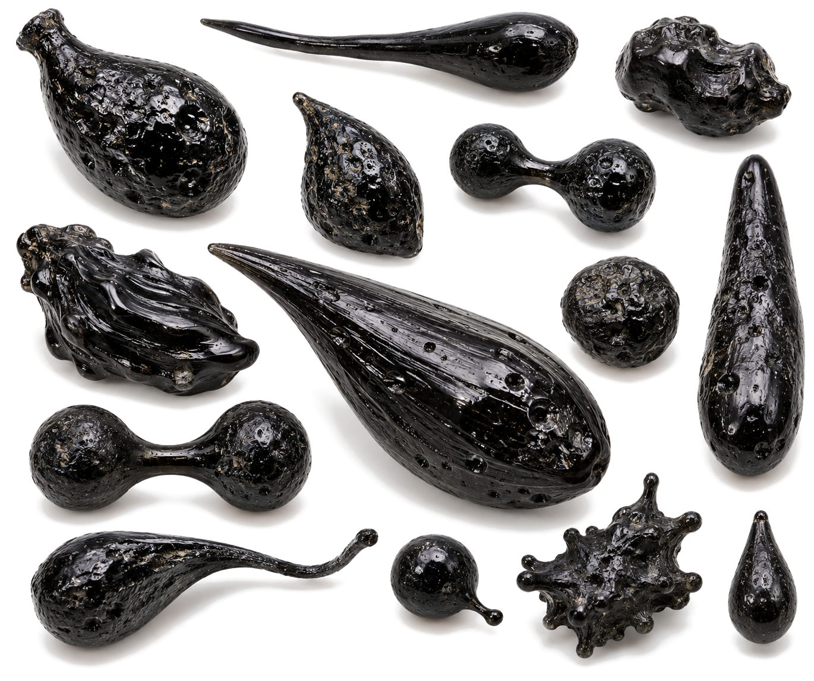
EJECTA FALLOUT: TRILLIONS OF BOILING GLASS TEKTITES
RAINING MOLTEN GLASS
300-Meter Waves!
Boiling glass tektites rained down, while thousand-foot tsunamis struck.
IMPACT EJECTA & OCEAN SURGE MATRIX
BALLISTIC EJECTA MASS: 200,000 CUBIC KILOMETERS OF ROCK RE-ENTRY FORM: MICRO-TEKTITES & GLASS IMPACT SPHERULES TSUNAMI RUN-UP HEIGHT: 300 METERS (1,000 FEET) INUNDATION REACH: FLOODED 100 KM INLAND ACROSS GULF COASTDELUGE OF GLASS
HOUR 24 // IMPACT WINTER
// CLIMATIC SHOCK: SOOT BLANKET ➔ DECADAL FREEZE
PHOTOSYNTHESIS SHUTDOWN // -30°C COLLAPSE
// STRATOSPHERIC SOOT // DECADAL NUCLEAR WINTER // -30°C FREEZE
DOSSIER #04 // THE PERPETUAL NIGHT
-30°C
IMPACT WINTER · DECADAL SUNLIGHT BLOCKADE
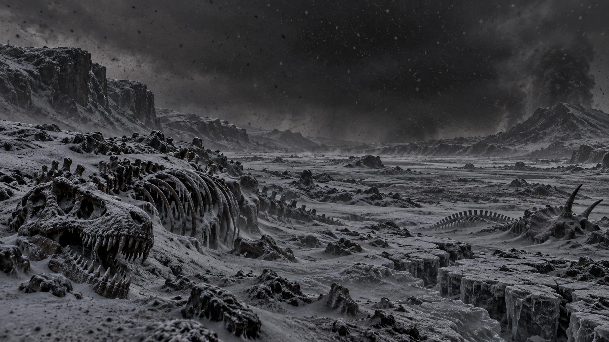
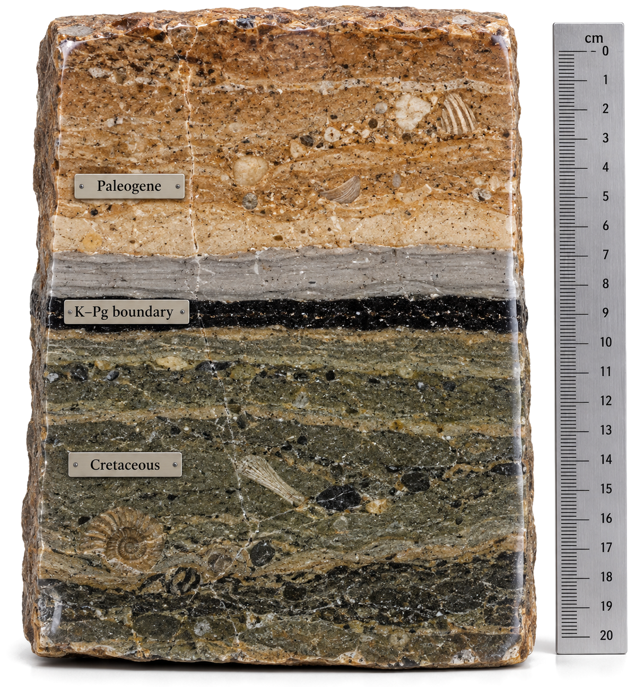
SOLAR RADIATION: 99.9% BLOCKED · DECADE-LONG ASH WINTER
DECADE-LONG DARKNESS
The Sky Went Black!
Within twenty-four hours, a choking blanket of soot blotted out the sun.
STRATOSPHERIC IMPACT WINTER LOG
AEROSOL COMPOSITION: 15,000 MEGATONS SOOT + SULFUR DIOXIDE PHOTOSYNTHESIS HALT: GLOBAL VEGETATION COLLAPSED FOR 10 YEARS TEMPERATURE CRASH: CONTINENTAL TEMPERATURES PLUMMETED BY 30°C FOOD CHAIN COLLAPSE: TOTAL EXTINCTION OF LARGE HERBIVORESIMPACT WINTER
DAY 1,000 // THE MAMMALIAN DAWN
// BIOSPHERE REBIRTH: PROTO-MAMMALS INHERIT THE EARTH
DAWN OF MAMMALS // THE REIGN BEGINS // -66.00 MA
// PALEOGENE DAWN // -66.00 MA // MAMMALIAN ADAPTIVE EXPLOSION
EXTINCTION ARCHIVE // RESOLUTION DOSSIER
MAMMALS
MAMMALIAN REBIRTH · THE ASHES TO EMPIRE
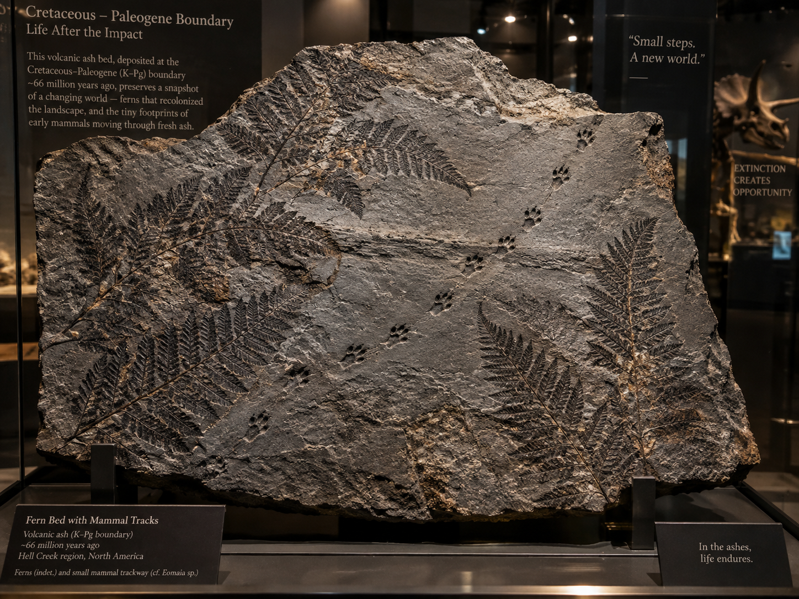
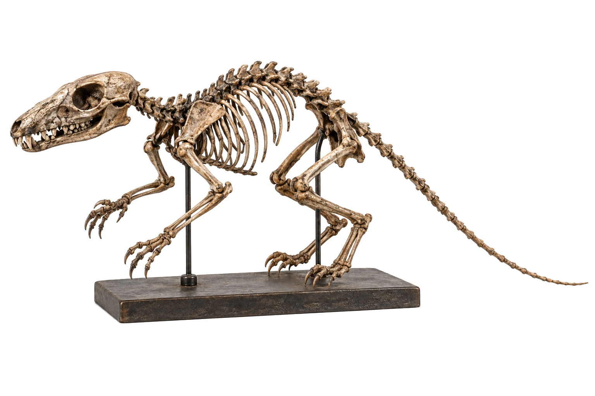
SURVIVAL: BURROWING MAMMALIAN ROOTS · THE HUMAN LINEAGE
BURROWING SURVIVORS
Our Ancestors Rose!
Dinosaurs died out forever, but tiny burrowing mammals rose from the ashes.
MAMMALIAN INHERITANCE DOSSIER
NON-AVIAN DINOSAUR STATUS: 100% GLOBALLY EXTINCT EARLY MAMMALIAN SURVIVORS: PURGATORIUS, MULTITUBERCULATES ADAPTIVE ADVANTAGE: BURROWING UNDERGROUND / OMNIVOROUS DIET EVOLUTIONARY TRAJECTORY: PAVED THE WAY FOR PRIMATES AND HUMANSSURVIVED
// THE EXTINCTION ARCHIVES: DOSSIER #04
THE DAY THE DINOSAURS DIED: CHICXULUB IMPACT
In a single afternoon, a six-mile asteroid erased 160 million years of dinosaur supremacy. From the freezing nuclear winter emerged the ultimate survivors: tiny burrowing proto-mammals that would one day evolve into the human species.
100M MT
Kinetic Blast
75%
Species Extinct
66M YRS
Age of Mammals
KINETIC
K-PG IMPACT
DOSSIER #04
AGE OF MAMMALS